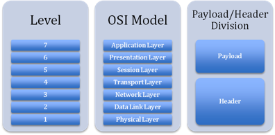

CODE DRIFT
Moving Across the Internet:
Code-Bodies, Code-Corpses, and Network Architecture
Christopher Parsons
Internet Service Providers (ISPs) are uniquely situated to survey data traffic because all traffic to and from the Internet must pass through their networks. Using contemporary data traffic management technologies, these companies can investigate and capture the content of unencrypted digital communications (e.g. MSN messages and e-mail) in real-time; pervasive application- and content-level surveillance is rapidly becoming a routine element of online life. [1] Surveillance of this nature entails "the focused, systematic and routine attention of personal details for purposes of influence, management, protection or direction." [2] While surveillance is not a new phenomenon -- Alan Westin's work demonstrates that while norms of privacy and surveillance may fluctuate, they have persistently existed across human cultures [3] -- innovations in technology facilitate expanded, widespread, automated monitoring of digital systems and the actions that happen in them.
With ISPs as its gatekeepers, Cyberspace rests atop the technical structure of the Internet. Mediated by data packets, orcs in Blizzard's World of Warcraft swing their swords, personal communications race between lovers, and (seemingly) anonymous identities aplenty flourish. Rather than functioning as separate environments, the Internet and Cyberspace bleed into one another; ISPs supply technical services so that consumers can access online social environments while reserving rights to modify data flows to those services in real-time. Such modifications can deeply affect how social environments are presented to the consumer; interaction speeds can be enhanced or degraded depending on ISPs' decisions. The question of how ISPs can and should modify data flows is the focus of network neutrality debates, wherein regulatory bodies, civil advocates, and ISPs gauge what constitutes "harmful" modification of individuals' data traffic and what are appropriate network management practices.
In effect, the Internet's underlying hardware, which is owned by dominant ISPs, can impact how code-bodies are developed and realized, just as the motions made and words uttered through code-bodies impact how consumers perceive Internet services themselves. "Code-bodies," the composite presences that individuals project across the Internet, are composed of the binary stuff that manifests as organs (underlying protocols that act as digital circulatory systems), orifices (applications on computers that "eat" and "excrete" data for "meat" body perceptions), and meanings (the truths/values that are made manifest through the interaction of organs and orifices). In their digital manifestation, bodies disintegrate into fragments of data as they scatter across the Internet to reform at ultimate destination points, but each fragmentary element must pass through ISP-governed gateways. While the bilinear relationship between the hardware of the Internet and manifestations of the code-body is not new, ISPs have recently integrated new networking technologies called Deep Packet Inspection (DPI) appliances into their network architectures that threaten to substantially reshape the transfer of data packets across the Internet. Such appliances may massively transform the constitution of the code-body, the identities that it carries, and the possibilities presented to it.
Across the Internet, an arms race between agents supporting and opposing network-based surveillance techniques has quietly unfolded over the past two decades. Whereas the 1990s might be characterized as hosting the first round of the encryption wars, [4] this paper focuses on the contemporary battlescape. Specifically, I consider how ISPs "secure" and "manage" their digital networks using contemporary DPI appliances and the ramifications that these appliances may have on the development, and our understanding, of the code-body. DPI networking appliances operate as surveillance devices that render the digital subject constituted by data packets bare to heuristic analyses, but, despite the ingenuity of these devices, some encryption techniques successfully harden otherwise soft digital flesh and render it opaque. Drawing on Kant and Derrida, I suggest that ISPs' understanding of the Internet as one of packets arguably corresponds with a Kantian notion of reality-as-such and offers a limited and problematic conception of the code-body. Turning to Derrida, we move beyond protocol alone to consider the specters that are always before, and always after, the code-body; Derrida provides a way of thinking beyond Kantian conceptions of space and time and the reality-as-such code-body and lets us consider the holistic identity of the code-being. Further, Derrida lets us interrogate the nature of DPI networking appliances and see that they resemble thrashing zombie-like code-corpses that always try, but perpetually fail, to become fully self-animated. While Derridean insights suggest that ISPs are unlikely to be successful in wholly understanding or shaping code-bodies, these corporate juggernauts do incite identity transformations that are inculcated in cauldrons of risk and fear. Not even Derridean specters can prevent the rending of digital flesh or act as a total antidote to ISPs' shaping of consumers' packet-based bodily identity.
Data Packets and Deep Packet Inspection
Let us begin by outlining these new DPI networking appliances that ISPs are integrating with their communications infrastructures, which entails describing how data packets are jettisoned across the Internet's circulatory system and how DPI appliances survey the packets and packet flows that are subjected to computational analyses.
When an email message is sent, its contents are broken into a series of data packets. These packets can, at a general level, be understood as being composed of two parts: the header and the payload/content -- the epidermis and body of the packet. The header information includes the recipient's Internet Protocol (IP) address, a number that is used to reassemble packets in the correct order when recompiling the messages and that is used to deliver the packet to its destination through the switches, hubs, and nodes composing the Internet's circulatory system. At a more granular level, the information used to route packets is derived from the physical, data link, network, and transport layers of the packet. The payload, or content, of the packet includes information about what application is sending the data, whether the packet's contents are encrypted, and what the precise content of the packet is (e.g. the actual text of an email). [5] Again, more granularly, the payload can be understood as being composed of the session layer, presentation layer, and application layer of the packet.
These granular divisions of packets' header and payload are derived from the Open Systems Interconnect (OSI) model (Figure 1). This theoretical model was developed by the International Standards Organization (ISO) in 1984 to standardize how networking technologies were generally conceptualized. Broadly, the closer an inspection technology gets to surveying the application layer of the payload, the more the technology can learn about the packet passing through an inspection device; the deeper these surveillance appliances penetrate the body of a packet, the more detailed the information they can extract about the composition of the code-body.
|  |
| Figure 1: Levels in the OSI Packet Model |
Before data is transmitted to the Internet at large, it must pass through the user's ISP network. Operating as a gatekeeper, this means that ISPs can deeply inspect packets, which can entail classifying the application (e.g. the Vuze BitTorrent program) or application-type (e.g. BitTorrent programs more generally) that is sending/receiving packets. ISPs can sometimes go as deep as examining the contents of the packet (e.g. letters of an email carried in a packet). Deep Packet Inspection networking appliances offer ISPs this newfound "opportunity" on a massive, real-time, scale.
DPI technologies aim to precisely identify the origin, destination, and content of each packet of data passing through ISPs' networking hubs; these technologies aim not only to totally perceive and understand each atom/digital packet of the code-body as they pass through DPI machines, but also to understand their molecular composition (i.e. the application, application-type, or content stretching across sets of packets). These devices can "look inside all traffic from a specific IP address, pick out the HTTP traffic, then drill even further down to capture traffic headed to and from Gmail, and can then reassemble e-mails as they are typed out by the user." [6] DPI devices are designed to determine what programs generate packets and the content those applications embed in payloads, in real-time, for sometimes hundreds of thousands of transactions each second.
In some cases, these appliances use Deep Flow Capture (DFC) to collect fragments of each packet and evaluate the characteristics of the packet stream against sets of known applications and their corresponding data stream patterns, identifying the origin of the packet stream. We can think of this metaphorically; it is as though the device is collecting pieces of the code-body and then reassembling them to create a complete image of the body-part under investigation. To perform this operation, the network appliance temporarily stores the fragments of hundreds or thousands of packets in the device's memory until it has enough information to appropriately match the packets against the device's list(s) of known packets. [7] Once the device can match the previously ambiguous packets against its list of known packets based on algorithmic predictions, it knows what application (or application-type) is generating and sending the packet; in other words, after developing a comprehensive image of the part of the code-body under investigation, the network appliance can identify the application or application-type responsible for generating the packet stream.
When a DPI device cannot identify the application responsible for sending packets by examining packets' contents, it examines how they are being transmitted between the computers that are exchanging packets to establish a partial image of the code-body. The device evaluates the spikes and bursts of traffic that occur as an unknown application sends and receives data to and from the Internet, and the device correlates the traffic patterns against known protocols that particular programs use to exchange data. This is analogous to examining secret handshakes; if you have a list of handshakes and their meaning, when you observe a handshake you can understand what is motivating the handshake (e.g. the application sending/receiving data packets) and (perhaps) what information is actually being exchanged between the parties. Given these broad capacities for surveillance, we can say that DPI lets network administrators inspect the totality of data exchanges flowing across their network in real time and lets them stop or manipulate packets before they even leave the originating network or arrive at a recipient within that network. By interrogating packets with DPI devices, system administrators gain greater control over every facet of their network operations.
Digital Principles and the Early Internet
While we might be inclined to see DPI appliances as particularly hostile -- insofar as they challenge and survey every data packet that courses through them -- it is important that we keep in mind that the Internet was born of war. ARPAnet, the progenitor of the contemporary Internet, was a redundant network communications system designed to facilitate military communications should a nuclear attack be launched against America. From the 1970s to the early 1990s, government and major research institutions were the predominant members of the Internet community; it was only in the early 1990s that the 'net was opened up to commercial uses. [8] While government monies fueled the development of the Internet, one can argue that governments were not fully cognizant of what they were paying for. [9]
The government money that was spent in developing the Internet was pouring into research labs of academics and computer researchers who, in effect, "built strains of American libertarianism, and even 1960s idealism, into the universal language of the Internet." [10] The very DNA of the Internet, its underlying protocols, are governed by the following principles:
1. Openness: any computer or network can join the universe of networks constituting 'the Internet'.
2. Minimalism: few computers need to join the Internet for it to function.
3. Neutrality: data transfer protocols do not discriminate bandwidth allocations on the basis of applications generating and receiving data traffic. [11]
As a result of these principles, data packets that were transferred across the 'net were "naked," insofar as neither data security nor protection was embedded into the basic principles of the 'net.
Network redundancy was possible because routers simply found new pathways to push packets across when nodes went offline. This principle of routing around damage led John Gilmore to state that, "The Internet interprets censorship as damage and routes around it." Where packets are prevented from moving through routing devices, typically because the device is configured to limit or stop particular packet transmissions, alternate pathways are discovered and exploited: information wants to be free, and the 'net's engineering principles are intended to guarantee that while information may be obscure, it is incredibly hard to censor. [12]
In terms of code-bodies, the early Internet operated as a space of relative freedom, insofar as these bodies developed and moved in digital spaces without fearing that virtual roadblocks would or could stop its development. With the turn to the contemporary digital environment, the code body matures and hardens itself with the rise of surveilling gazes.
Digital Voyeurism and Encrypted Carapaces
Whereas in the early Internet, code-bodies coursed through Internet gateways with little fear that their Being would (or could) be examined in real-time, this has changed in recent years. With the development of technologies that can fully inspect packets, such as (DPI), the digital body can be rendered fully visible. Organs can be mapped, and orifices identified and limited in their abilities to "eat" and "transmit" data packets, with the consequence that meanings are modified or censored with the intent of increasing revenue streams (such as by injecting advertising into web sessions, or mapping every digital transaction to develop a consumer profile to be sold to third-party advertisers), or bodies are limited from accessing particular content sites on the basis that some sites place strain on ISPs' networks (e.g. high-bandwidth streaming sites, such as YouTube or Hulu, might have their packets delayed on the basis that the high density of packets generated from video-streaming causes congestion on an ISP's network, which is the equivalent of causing a traffic jam in the network). [13] Whereas insects develop bio-chemical shells to protect themselves from hostile environments, digital bodies have adapted to threats by being shrouded in carapaces constituted by encryption algorithms. This is demonstrated in the rising use of the Transport Layer Security (TLS) protocol by major commercial institutions to prevent eavesdropping, content tampering, and message forgery, [14] as well as other protocols that are similarly aimed at preventing unauthorized voyeurs from perceiving anything more significant than packets' routing information (and even this is sometimes obfuscated). Just as we try to limit who knows our most intimate secrets in the space we physically occupy, we strive to retain similar capacities for intimacy and privacy in the digital spaces that we inhabit, and which increasingly blur divisions between mind and matter spaces. [15]
In the effort to retain a semblance of personal privacy or, put another way, a modicum of control over who watches and records what we do and say, code-bodies have grown exoskeletons of encryption. These exoskeletons are constantly probed for weaknesses -- new heuristics are developed and injected into DPI appliances to identify what encryption algorithms are being used, to determine what applications are generating data based on data transfer patterns, and to ascertain packet contents based on their size and header characteristics. [16] While our code-bodies may resist being penetrated, they unintentionally reveal the colonies that they are associated with. Once a packet is encrypted, it is often flagged by American intelligence services, which identify the packet's point of origin and destination and store this information in intelligence databases. [17] As a result, in securing the body the community becomes subject to intense military-grade surveillance; securing one's personal privacy from corporate eyes comes at the expense of the larger community that the code-body moves amongst being mapped by the public military complex. In this sense, voyeurism becomes socially, as opposed to just individually, invasive.
Data that is collected from these packet transfers can be correlated with surrounding information-sets; IP addresses can be traced to geographical locations and the names of Internet subscribers, and patterns of digital movement can be used to develop composite identities (e.g. programs commonly used and bandwidth consumed, commonly accessed websites for behavioral tracking, etc.). [18] Digital correlation practices do not require knowledge of particular individuals to constitute useful datasets, as affirmed by Diffie and Landau when they write that "[t]raffic analysis reveals an organization's structure, its membership, and even the roles of its members." [19] Further, Bell Canada has implied that they classify consumers' digital bodies in a Canadian Radio-television and Telecommunications Commission (CRTC) filing, where they posit why wholesale customers consume a disproportionate amount of bandwidth:
1. These consumers use HTTP for content sharing to greater extents (on average) than non-wholesale customers.
2. This consumer group is behaviorally disposed to consuming greater amounts of bandwidth, and are actively courted by retail wholesellers of Bell's broadband network. [20]
Bell's association of the code-body to the physically instantiated body demonstrates the capacity and willingness of major ISPs to link code-bodies with human colonies and groups. Further, by engaging in network-level surveillance, Bell was able (and willing) to categorize particular users according to corporate norms and logics, and Bell has drawn on this data to argue that the corporation has a right to throttle, or delay, data packets that rely on particular file-transfer protocols. Based on the application and application-type, as identified by DPI appliances, data packets are given priority over one another. Bell continues to use DPI appliances to delay the data traffic of their own and third-party ISPs' users; they continue to assert their power as digital gatekeepers to dictate what are more and less appropriate uses of the Internet (e.g. web browsing is an appropriate use of networking resources and thus is not delayed, whereas P2P file sharing is less appropriate and so the packets P2P programs generate and receive are regularly throttled).
Just as physical surveillance technologies totally invade the body from a distance [21] and are deployed to map social movements, [22] digital surveillance apparatuses can now similarly penetrate the code-body and map its relationships. Surveillance has become hyper-real, insofar as it has made the leap to digital spaces and normalized them according to the logics of penetrating the physically embodied self. A radical change in surveillance, however, has been the near-total replacement of human agency in the digital surveillance process -- "the watching gaze has long since ceased to be that of the artist or even the scientist, but belongs to the instruments of technological investigation, to the combined industrialization of perception and information." [23] Confirming David Lyon's worries, this transition has been described as the endocolonization of the world that causes the world to become alien, [24] to become a world in which all data is linked to particular identities [25] and the commonly proposed "solution" is a heightened transparency of data flows, instead of demanding that some of these flows be terminated. [26]
Given the seeming inability to prevent or stop the surveillance of our digital bodies, regardless of whether we develop code-carapaces or not, we might be inclined to throw up our hands and surrender to the Little Brothers surrounding us. Prior to abandoning all hope, let's turn to and leverage Kant to "decode" how ISPs might understand the code-body. From there, we will attend to Derrida to critique the current processes of securitizing the code-body through surveillance, and to explore the conditions of perpetually evading DPI surveillance apparatuses.
Reasonable Publicity
Kant approaches the world through his metaphysics, which he initially develops in the Critique of Pure Reason. In this text, he recognizes that time and space are pure a priori intuitions required for all other scientific endeavors. These intuitions require a subject, for
if we remove our own subject or even only the subjective constitution of the sense in general, then all constitution, all relations of objects in space and time, indeed space and time themselves would disappear, and as appearances they cannot exist in themselves, but only in us. [27]
This account of subjectivity is individualistic, insofar as engagements with the world are experienced by the particular subject on his or her terms, as structured and ordered by concepts. The same faculty of reason that orients individuals in the world by structuring their experiences enables critical engagements with the world that are monological, insofar as individuals are self-responsible for exercising their faculties in accordance with their duties. With maturity, subjects develop this faculty and "extend" their freedom as they more completely understand the rational duties that they ought to perform in conformity with their moral obligations. Individuals are free because of their rational faculty and express their freedom whilst performing rationally universalized actions.
Kant's theoretical structure presumes that the faculty of reason can capture freedom's total cognizable possibilities by working from the a priori concepts of space and time. His time is linear, and it corresponds with mechanized time that is built into the procession of computer processors' cycles. As such, there is a sequence of times passed by, a lone moment that is, and hosts that are yet to come. Each temporal instant is necessarily experienced by a subject, assuming they exist during a moment's particular temporal Being (as distinguished from a moment's Being-Past and Coming-to-Be), and these instants are characterized by space functioning as either a site that is filled or as one devoid of being filled. [28]
In terms of ISPs' DPI appliances, these appliances navigate packet streams as they are temporally encountered; as packets pass through the devices, they are inspected and evaluated against existing rule sets or predefined heuristics. Where there are delays between packets, the absence of packets in "space" at a particular time is drawn into the computations of algorithms being applied to the packets. Absences themselves assist in identifying the application or application-type that is generating and receiving packets, especially when packets have been rendered opaque from direct surveillance through encryption. Perhaps most importantly, DPI appliances take as given that what can be, and is, evaluated corresponds with the spatial-temporal dimensions of modernity launched by Kantian metaphysics.
While Kant offers an understanding of the presence of the DPI/packet relationship, what are we to make of what always precedes and rests behind the packet: what are we to make of the specters of packets? The difficulty, of course, is that Kant's temporal-spatial structure is problematized by the possibility of times that are always coming, and always simultaneously past, but can never be realized, as well as by spaces that are always filled, and never filled, or those that the subject/DPI appliance is forever prevented from directly experiencing. A Kantian account of a code-body situates it in time and space, as an individuated subject, whereas data flows are multiple, mass, asynchronous and transactions are experienced as social rather than individual. Derrida, as we will find, lets us address the code-soul that is implicated in the code-body's very existence. Enter the Derridean specter.
The (In)Visible Constituents of Being
There are times, places, and objects that we sense as being somehow different; this differentness is not frightening so much as uncanny. In Turkle's words, the uncanny is that which "seems close, but 'off,' distorted enough to be creepy. [The uncanny] marks a complex boundary that both draws us in and repels...." [29] For Derrida, specters are experienced as uncanny; [30] we only perceive them as frightening when they jeopardize cherished norms and hegemonic principles and, at these moments, we transmute them from specters to ghosts. Let us unpack what the specter is to exemplify -- why it challenges modes of mass surveillance (such as DPI) that implicitly agree with Kantian notions of time -- and then proceed to think through how the specter can problematize the notion that "ubiquitous" digital surveillance techniques can fully penetrate the code-body.
Derrida's specter is a persistently disturbing present that lingers "in the coming-and-going, between what goes and what comes, in the middle of what leaves and what arrives, at the articulation between what absents itself and what presents itself." [31] It is out of joint with time, insofar as it forever stands before and after a moment of experience; it is never realized in the Now save for as a shadow or whisper of what has, or will, come to pass. Given this, specters are never actualized in reality -- they are ontologically incapable of actualizing themselves in any manner other than haunting. A specter "haunts... without residing, without ever confining itself to the numerous versions of this passage," [32] and, given its disturbing, we (the embodied, the real, the actualized) perform elaborate exercises to find where the specter "resides" so that we can exorcise it.
Exorcisms are meant to drive away that which has never, and always might, Become. Exorcism "pretends to declare death only in order to put to death ... it certifies the death but here it is not in order to inflict it." [33] As agents that typically perceive themselves in a modern temporal-spatial existence, [34] we work to imbue the specter with a Being that it does not, cannot, actually possess; in a mockery of death, we pretend to kill that which cannot be killed and declare the execution successful. We impose an ontological structure that corresponds with our own perceptions of Being-in-the-World in an effort to temporalize and spatialize the specter. Having attributed these characteristics to the specter, we find its haunts and sanctify them to "deny" it a space to reside -- we humanize it, and end its existence as we would a human's. Ultimately, however, our task is a fool's errand (not even Sisyphean!): uncanniness remains even after the formal "vanquishing" of the specter. The haunting continues....
Hyper-Phenomenology and Justice
What would it mean to find or vanquish the uncanny, to put an end to being haunted? For our purposes, what would it mean for a DPI appliance to be successful in a specter-hunt? What would be the consequences of ending the hyper-phenomenology that is always-never embedded in our experiences?
To banish specters we would first need to stand in clear relation to them. This would demand a process that was stridently different from a Hegelian thesis/antithesis/synthesis relationship; the relationship between specters and us is one between Being and Being-without-ever-Being. Banishing a specter by drawing a Hegelian division would confirm our own actualized Being: we have bodies, and we operate in time -- Kant's conception of space-time would necessarily be certified. Such a division would assume that we are "normal" and demand a normalization of the uncanny by situating it in relation to ourselves without admitting the possibilities of non-spatio-temporal ontological existences that defy our phenomenological orientations in the world. To avoid getting wrapped up in a Hegelian dialectic and actually "banish" the hyper-phenomenological, it is critical to try to address the specter according to its own "existence"; ontologically, this requires understanding oneself as outside or beyond space and time. Should a piece of network machinery strive to understand itself in this manner, the machinery would need to recognize itself, not just the specter, as out of joint.
In considering being out of joint, let us focus on the implications of out-of-jointedness for justice. In a hyper-phenomenological situation, justice would be transformed from a universal normative guide to something that is forever yet to come, and always beyond Being. Instead of a Kantian regulative ideal of justice against which we could normatively evaluate our actualized understandings of justice, justice becomes something that can never be -- moral-juridical norms do not capture justice, and as such law necessarily commits violence instead of justice. Understood hyper-phenomenologically, justice must permanently stand before and behind law. In this sense, to a phenomenological being, justice can only be recognized in moments of exceptionality that are perceptible on the basis of their uncanniness. On this basis, the "justice" administered towards packets by DPI appliances necessarily does violence to the atoms of the code-body, where each packet is understood as composing the digitized molecular structures of the code-body itself.
Given that there is simultaneously a drawing towards and repulsion from the uncanny, our relationship with justice is such that (like moths to a flame) we are prevented from genuinely experiencing anything more than an apparition of the hyper-phenomenologically understood concept. Justice must haunt us. While we can approach the hyper-phenomenological, we cannot transcend the realm of experience. The condition for banishing or "killing" the hyper-phenomenological demands an ending of phenomenological biases; such an ending would require passing into the flame of the hyper and burning just as a moth does when caressed by flame. Barring an end to our Being-Towards-Death, we are left with the uncanny, and are perpetually haunted by its open-ended possibilities, which can never be substantively actualized in time and space. Justice becomes impossible to realize, but it is always something that simultaneously attracts and repels us.
Such an impossible-possibility suggests that any assertion of a formal injunctive proposition meant to condition phenomenal behavior is necessarily limited, conditioned, and (likely) engaged in violence against justice as a hyper-phenomenon. Since any attempt to banish the specter (and thus justice) is doomed to fail, we are left with the question of whether a condition of publicity could ever meaningfully mediate the intrusions of digital eyes into our code-bodies. While Kant's transcendental and affirmative principle of public right correlates judicial legitimacy with legal publicity, [35] such juridical understandings are based within the confines of human subjective experiences grounded squarely in time and space. Publicity alone, the commonly touted antidote for legal legitimacy, cannot capture the hyper-phenomenology of justice.
Kantian-inspired emphases on space and time, as adopted by DPI appliances, can speak to facets of the code-body's presence but cannot say much about the code-spirit that haunts the body and generates meaning. Such appliances are incapable of transcending their own ontological existences; thus, if we can assert that a code-spirit/specter exists, a mass-surveillance system dependent on Kantian notions of space-time (such as DPI) cannot capture or identify the Being of the code-being. Effectively, if DPI appliances have limited understandings of the constituent elements of the cody-body itself, the essence of the code-body cannot be entirely captured by the gaze of these surveillance apparatuses; elements of play and flight are necessarily concealed from the surveillant gaze and maw of the code-corpse. While a code-body's finger might be gnawed on (e.g. a particular data protocol might be throttled, manipulated, or blocked), the meaning of the finger in relation to the greater essence of the code-body remains hidden to the corpse; the motivation for using the program, the relationship between that motivation and other digital actions, and so forth, remain unknown to the DPI appliance.
Code-Bodies and Digital Bugs
The code-body is manifest through its organs, orifices, and meanings in a manner similar to the physically represented body. How might we understand the specters that haunt this digital body, and what spaces does this provide for our discussion of surveillance appliances that penetrate the depths of code?
Code-bodies are developed according to the (supposedly) rigorous protocols and data equipment that shuttle packets across the 'net. In turning to HTTP, FTP, and STMP protocols, JPEG, MPEG, MOV, and HTML data formats, and TCP/IP, IPX, and ATM routing information, we think that these bodies can be mapped. Analyzing router hops and understanding the Time To Live (TTL) let us identify distances that packets can move, and watching for routers that refuse to pass along packets reveals the Internet's "closed" doors. Whereas physically situated bodies navigate code-bodies, when non-living machines animate digital-bodies their non-living bodies move through networks in a programmatically fixed, zombie-like fashion as code-corpses. Code-corpses, computers that operate without being motivated by direct human agency and that are limited in demonstrating only fixed movements and actions, mobilize throughout digital networks beside their "living" counterparts but with a deeply limited set of responses to the phenomena they experience. Automated email resolution messages (such as those from the seemingly ubiquitous Postmaster), heuristic surveillance analysis protocols, and self-healing digital frameworks are all demonstrations of the limited self-agency that is embedded into digital networks. As a step beyond how this code is meant to be "played out," however, there is always a danger that something "weird" happens: a router stops forwarding packets from a particular address based on an unpredicted heuristic analysis, the Postmaster begins sending unintelligible or incorrect messages, or a self-healing framework gets locked into perpetual healing cycles when it perceives a fatal flaw that is intrinsic to the design of the network. [36]
In each of these situations, human agents say that a "bug" has been found and needs to be "fixed." Developers who prepare projects routinely engage in bug-hunts, where they aim to "cleanse" code of imperfections. Operating with a regulative notion of "normal," software and hardware jockeys always aim to approximate the ideal. These hunts are more effective when good practices and processes have been followed in the development process. "Good" here means that transparency pervades the development cycle; all changes to the codebase/system are documented and made available to anyone who wants to look at the code. In this sense, good code doesn't just run: it also has clear comments beside the lines so that other developers can read what the code is doing or is supposed to be doing. In terms of DPI appliances, this means that their bodies must be rendered transparent, and they are programmed to similarly render transparent code-bodies. What, however, are we to do about these code-corpses' souls?
Haunting the Code-Body and DPI
What does a code-corpse find uncanny? To put it another way, what is it that draws and repels a DPI appliance; what haunts the technology (at the level of code, rather than the level of politics)?
The code-body is haunted by expectations/hopes of controlling or mediating the voyeuristic leering of surveillance apparatuses, being simultaneously drawn to them (as it moves across digital networks and almost "touches" the routing equipment) and repelled from them (as it is jettisoned away from the equipment and projected towards another point on the network). In the process of moving, the data packets composing the carapaced code-body are drawn to reveal themselves to routing equipment (by providing packet header information to direct the packet to its destination), while repelling themselves from divulging their inner being (by encrypting packet payloads to prevent undesired surveillance). What is the equivalent set of relations for DPI appliances?
Whereas the carapaced code-body is caught in a relationship of revealing/hiding its body from the voyeuristic gaze of the DPI appliance's heuristics, the DPI device is haunted by the drive to totally penetrate the code-body without ever being able to do so. Even streams of non-encrypted data packets cannot be perfectly identified using heuristic analyses. [37] Further, where "soft" (i.e. non-encrypted) data packets stream through the DPI routing device, the appliance can identify the code-body's organs (underlying protocols that acted as digital circulatory systems) and orifices (applications on computers "eat" and "expel" data for "meat" perceptions), but cannot determine the meaning of the relationship between these organs. A DPI appliance's capacity to fully investigate the meaning of a code-body's movements is crippled because it cannot simultaneously view or understand the relationship between digital data packets and the physically embodied self's relationship to their digital flesh. While DPI appliances can assume that particular packet exchanges can be correlated with meaning that follows from how the physically situated body values its digital self-embodiment, that correlation is always predictive. The appliance's location in network hubs, instead of in the minds of consumers' bodies and networking data centers, means that heuristics can only approximate possible meanings from the relationships of organs and orifices; perfect accuracy is denied and the project of totalized transparency is foiled. The appliance is always haunted by the possibility of penetrating the code-body to realize meaning, but it is unable to capture meaning through its heuristically driven relational processes.
The consequence of the "encryption wars" is that the DPI appliance is always close to, but never fully upon, the carapaced code-body for similar reasons as with the non-carapaced, or larval, code-body. With the encrypted body, organs, orifices, and meaning are cast into even more deeply confused relationships. Why is the data encrypted? Does the DPI device even recognize the data as being encrypted, or is the body masked in a way that totally fools the appliance's analysis? Given the possibility of packet forging and the chance that the appliance cannot detect the forgery, does encryption not further problematize the derivation of meanings from organ/orifice relationships? In effect, does encryption fully frustrate an understanding of particular code-bodies?
DPI, Code-Bodies, and Bodily Identity
The Internet is a space of intense conflict between those who seek total packet transparency and those who seek shelter from surveying gazes. Whereas DPI devices function as code-corpses that, zombie-like, persistently attempt to digest the code-bodies that must fall into their maw, they are incapable of understanding the bodies that must pass through them; total digestion of the code-body is impossible. Even when applying heuristics, checking for digital fingerprints, and engaging Deep Flow Capture techniques, the absolute meaning of what drives the code-body eludes the appliance's cybernetic processors. While we might, on this basis, be tempted to claim that the body thus eludes the corpse insofar as elements of it persistently stand before and after moments of DPI-driven surveillance, we should recognize that the corpse's digestive fluids scar the code-body.
We began this paper with the worry that efforts to shield individual code-bodies came at the expense of increasing military oversight, and while we can understand through Derrida why DPI appliances are incapable of totally rendering the constitutive elements of binary flesh, we need to reflect on the limitations of the specter. When we thought about what haunted DPI appliances themselves, we found that their inability to precisely identify the meaning of organ/orifice relationships meant that the ontological drive of these routers to fully see is forever frustrated. Unlike a regulative ideal, this paper suggests that meaning can never be precisely/perfectly known; at best, statistical degrees of accuracy are possible, and such statistical interpretations necessarily impose an ontological understanding of what meaning is on the code-body, rather than engaging the body on its own terms. Thus, the total penetration of a packet is frustrated, just as a moth is frustrated from touching the candle's flame; DPI identification techniques can only understand the code-body in the DPI device's terms, and never in terms of a holistic understanding of the code-body itself.
What does this mean for the constitution of one's identity in Cyberspace? How might we read the impacts of code-corpses on the fertility of Cyberspace, where identity generation and realization is often seen as fluid and playful? How is the code-body scarred?
I would tentatively suggest that while we have discovered the equivalent of an ethic of flight in Derrida, this ethic does not prevent an actual rendering of the flesh. While this ethic limits the depth of voyeur-imposed wounds, trading critical injuries for flesh wounds, it still risks scarring the body. We might go so far as to assert that the carapace functions as a piece of scar tissue; as the body has been cut by various online surveillance techniques, including those originating from Internet routing devices, encryption was necessitated. Further, while the code-body shrouded in a carapace may limit its exposure to the gaze of DPI appliances', its scarred body immediately draws the attention of network surveillance to the colony of other code-bodies that it interacts with and amongst. [38] As a result, we can state that the typical consequence of shrouding oneself from deeply penetrating surveillance is that the society the individual swims within is brought into focus. In effect, one's capacity to form an identity through independently motivated action is (at least partially) shaped by these appliances, regardless of whether one develops a carapace or not. While the most significant mode of resistance entails the encryption of the code-body to maximally prevent an understanding of the essence of the body's actions, some understanding of the code-body is necessarily realized in the process of being inserted into the code-corpse's maw; encryption does not function in a liminal zone nor does it allow a sidestepping of the logic of surveillance.
Given that contemporary network appliances can be integrated with customer service databases, DPI network appliances threaten to bring about a massive coalescence of our physical and digital lives. What is telling, however, is that the Derridean ethic of non-presence limits a holistic understanding of an individual from taking place; the individual's identity can be posited, but it can never be entirely confirmed. The act of positing an identity can have severe repercussions on the movements available to a body (e.g. throttling particular protocols can be correlated with a forced amputation of a code-limb), but while such an identity-shaping event can occur, it in no way removes actual agency from the individual in question. The very act of flailing about can be used to assert or refute tenets, principles, and expectations that intelligent appliances develop about individuals. While scarring, or even amputation, can befall the code-body via DPI appliances, such injuries modulate how performances can be performed and thus transforms the field of identity-formation rather than obliterating the possibilities of identity-formation entirely.
The Internet was birthed of war, and battles continue to rage between the providers of the 'net's infrastructure and those who want to transcend bare protocol. Neither the 'net nor Cyberspace operate in isolation; they are instead involved in a bidirectional relationship. As such, while modifications to the governing software and hardware affect how Cyberspace's plasticity is realized in the course of identity-formation, such plasticity and fluidity finds new crevices to seep into (new avenues that are not subject to harsh surveying gazes) and persistently rearticulates itself, even in the face of seemingly staunch phenomenological assertions of what is, was, and can be. Even in the face of sometimes extreme war wounds, orcs can kill elves in another video game environment and broken conversations can be had via VoIP. Fluid identity transformation has not ended with the introduction of DPI appliances, the Little Brothers have not taken over the totality of our worlds, but we are obligated to think through what transformations are necessitated by, and prevented by, the situation of ravenous corpse-like intelligence within ISPs' networks.
Notes
-------------------
[1] "Application-level" surveillance examines the computer programs (e.g. Soulseek, Windows Mail, Internet Explorer) that are transmitting data across a network. "Content-level" surveillance examines the data that computer programs are transmitting to the network (e.g. music and video files transmitted using Soulseek, email messages sent through Windows Mail, and WebPages reached using Internet Explorer).
[2] David Lyon. Surveillance Studies: An Overview (Malden, MA: Polity, 2007), 14.
[3] Alan Westin. Privacy and Freedom (New York: Atheneum, 1967).
[4] Whitfield Diffie and Susan Landau. Privacy on the Line: The Politics of Wiretapping and Encryption (Updated and Expanded Edition) (Cambridge, Massachusetts: The MIT Press, 2007).
[5] Nate Anderson. "Deep packet inspection meets 'Net neutrality, CALEA," Ars Technica, http://arstechnica.com/hardware/news/2007/07/Deep-packet-inspection-meets-net-neutrality.ars (accessed 28 June 2009).
[6] Ibid.
[7] Allot Communications Ltd. "Digging Deeper into Deep Packet Inspection," http://www.getadvanced.net/learning/whitepapers/networkmanagement/ Deep%20Packet%20Inspection_White_Paper.pdf (accessed 25 July 2009). Allot uses the metaphor of "fingerprints" for their explanation of DPI appliances; I have slightly modified the metaphor to remain consistent with the text while maintaining the metaphor's target concept.
[8] Jonathan Nuechterlain and Philip J. Weiser. Digital Crossroads: American Telecommunications Policy in the Internet Age (Cambridge, Mass.: MIT Press, 2006), 129-131.
[9] This was, in part, demonstrated in 1998 when civilian researcher Jon Postel took control of the central Dynamic Name System (DNS) servers that resolve web addresses with Internet Protocol (IP) addresses. Had the American government fully recognized the potential damage that could be done by this seizure of control of the 'net, one would imagine that it would have enacted measures to avoid such take-overs.
[10] Jack Goldsmith and Tim Wu. Who Controls the Internet? Illusions of a Borderless World (Toronto: Oxford University Press, 2006), 23.
[11] Ibid. When conceiving of a digital network, there are key nodes that data must pass through (e.g. ISPs) in order for data to reach the edges of the network (e.g. individuals' personal computers, Internet enabled phones, etc.). In order to establish an open platform for digital innovation, it is critical that all applications are equally able to receive and transmit data; it is impermissible to prevent Skype from transmitting and receiving data content where an ISP's own Voice over Internet Protocol service is able to transmit and receive data. This spirit of network neutrality has led to uses of the Internet that were unthinkable to its creators -- the Internet was not designed with e-commerce, voice/video communications, or iPhones in mind. Maintaining network neutrality means keeping to the principles of openness, minimalism, and neutrality. As has been evidenced by AT&T's past efforts to dominate its telephone network and prevent innovative uses of their network, situating ISPs as non-neutral gatekeepers threatens to undermine the capacity for developers to provide compelling, useful, and innovative products. For more on the stagnating effects of letting telecommunications companies discriminate against particular uses of their networks, I refer you to chapter two of Nuechterlein's and Weiser's Digital Crossroads: American Telecommunications Policy in the Internet Age and chapter ten of Lessig's The Future of Ideas.
[12] Chris Anderson. Free: The Future Of A Radical Price (New York: Hyperion, 2009). Anderson's discussion of offering information products "for free" corresponds with his larger argument that information businesses need to adopt "freemium" business strategies that provide most products for free and aim to have only a handful of consumers pay for the information product provided. He regularly argues that attempting to prevent the flow of information and getting into contests of control with a user/consumer base are detrimental to business interests and run counter to the architecture of the Internet. In his text Protocol, Galloway recognizes that while principles of freedom may be normatively realized in digital networks (and especially realized in what I have termed the "early Internet"), control is actually the basic operating principle more generally of protocological environments such as the Internet.
[13] For a discussion of the censoring practices that occur in Canada by major ISPs using DPI equipment see the section "Injecting Content with DPI - Rogers as a Case Model" in the Public Comments offered by Christopher Parsons for CRTC Interrogatory Public Notice 2008-19 at http://tinyurl.com/d3arc5/
[14] The Pirate Bay, a large Bit Torrent Peer-to-Peer website, has recently announced that their contribution of the encryption wars will be to provide easily accessible, easily used, Virtual Private Network (VPN) service for ?5/month. This service will fully encrypt all data traffic and is meant to prevent media corporations from identifying whether individuals are transmitting or receiving data packets holding copywritten data. Organs, orifices, and meanings are all shielded from the gaze of security.
[15] The blurring of online and offline is clearly seen in scholarship examining the effects of increasingly anthropomorphic user interfaces in online environments. See: Ryan M. Calo. "People Can Be So Fake: A New Dimension To Privacy And Technology Scholarship," http://papers.ssrn.com/sol3/papers.cfm?abstract_id=1458637 (accessed 20 August 2009).
[16] Christopher Parsons. "(Working Paper) Deep Packet Inspection in Perspective: Tracing its lineage and surveillance potentials," The New Transparency Project. http://www.surveillanceproject.org/files/ WP_Deep_Packet_Inspection_Parsons_Jan_2008.pdf (accessed July 25, 2009).
[17] Whitfield Diffie and Susan Landau. Privacy on the Line: The Politics of Wiretapping and Encryption (Updated and Expanded Edition) (Cambridge, Massachusetts: The MIT Press, 2007).
[18] Even where data is "anonymized," such anonymizations have a tendency to be insufficient to secure an individual's privacy. See: Paul Ohm. "Broken Promises of Privacy: Responding to the Surprising Failure of Anonymization," University of Colorado Law Legal Studies Research Paper. http://ssrn.com/abstract=1450006 (accessed 20 August 2009).
[19] Whitfield Diffie and Susan Landau. Privacy on the Line: The Politics of Wiretapping and Encryption (Updated and Expanded Edition) (Cambridge, Massachusetts: The MIT Press, 2007), 309.
[20] Bell Aliant/Bell Canada (Bell). "Telecom Public Notice CRTC 2008-19, Review of Internet management practices of Internet providers (PN 2008-19) - Comments," filed to CRTC February 23, 2009. http://www.crtc.gc.ca/public/partvii/2008/8646/c12_200815400/1029804.zip (accessed 28 June 2009). Only two of Bell's three reasons are offered, because one was filed in confidence to the CRTC.
[21] An example of "total invasion" of the body would be the body scanners that are being deployed in Western airports and are designed to see through one's clothes to give security examiners a view of the body underneath. The body is laid bare, subject to the voyeuristic gaze of security. For more on body scanners, see EPIC's archive on the subject at http://epic.org/privacy/airtravel/backscatter/#profiling
[22] The New York/Manhattan "ring of steel" security zone, as an example, aims to fully identify and track individuals that enter sensitive areas in Manhattan. This zone is being massively outfitted with surveillance cameras, with the stated aim of better securing Manhattan from future terror attacks.
[23] Paul Virilio. The Information Bomb (New York: Verso, 2005), 57.
[24] Ibid.
[25] Daniel J. Solove . The Digital Person: Technology and Privacy in the Information Age (New York: New York University Press, 2004).
[26] David Lyon. Surveillance Studies: An Overview (Malden, MA: Polity, 2007), 181-2.
[27] Immanuel Kant. Critique of Pure Reason, ed. Paul Guyer and Allen W. Wood (New York: Cambridge University Press, 1998), 185.
[28] For more far-ranging discussions of the "emptying" of time see Giddens' The Consequences of Modernity, Latour's We Have Never Been Modern, and Habermas's Philosophical Discourses of Modernity.
[29] Sherry Turkle. Evocative Objects: Things We Think With (Cambridge, Mass.: The MIT Press, 2007), 8.
[30] Jacque Derrida. Specters of Marx, ed. Peggy Kamuf (New York: Routledge Classics, 1994), 125.
[31] Ibid, 29.
[32] Ibid, 21.
[33] Ibid, 59.
[34] While Latour insists that we actually reside within networks as non-moderns, there is an ideological or perceptive difficulty that must be overcome by moderns to recognize their non-modernity. As such, I suggest that the dominant perception, if not reality, of spatio-temporality is conceived of as aligning with the metaphysics of time born of figures such as Immanuel Kant. For more, see Latour's We Have Never Been Modern.
[35] Immanuel Kant. Political Writings, ed. H. S. Reiss (New York: Cambridge University Press, 2002), 130.
[36] Contemporary Computer Processing Units (CPUs) are designed to limit and prevent fork bombs that are caused by bugs in code and viral attacks. Fork bombs ceaselessly create clones of pieces of code until the computer runs out of memory, in the hope that this will create a memory addressing error and cause a network/computer crash. In a well-known case, CPUs from hardware company AMD attempted to resolve fork bombs that didn't actually exist; their efforts to heal the system actually provoked computer crashes. The only solution (for that generation of processors) was to turn off that element of the CPUs' agency.
[37] Comparative tests of DPI appliances have demonstrated that even when operating in controlled networking environments, DPI appliances are unable to correctly identify and mediate all the unencrypted packets that pass through them. These results are best shown in Carsten Rossenhovel's "Peer-to-Peer Filters: Ready for Internet Prime Time?" Internet Evolution. http://www.internetevolution.com/document.asp?doc_id=148803&page_number=1 (accessed October 8, 2008).
[38] While one might be tempted to respond that packet forgery, which lets individuals generate false points of origin for data broadcasts to inhibit the correlation of their encrypted actions to a single origin, would evade DPI surveillance and analysis (the equivalent of plastic surgery that lets the horrifically scarred walk around "normally" beautiful people without eliciting derisive reactions/surveillance), few people can implement this technical feat that is limited to the broadcasting, rather than receiving, of data transmissions.
----------------
Christopher Parsons is a PhD student in the Political Science department at the University of Victoria, and a member of the New Transparency Project (link: http://www.sscqueens.org/projects/the-new-transparency). He is interested in how privacy is affected by digitally mediated surveillance, and the normative implications that this has in contemporary political systems. His research presently focuses on technologies such as deep packet inspection, behavioural advertising, and radio frequency identification, and how these technologies influence citizens in their decisions to openly express themselves and associate with one another.